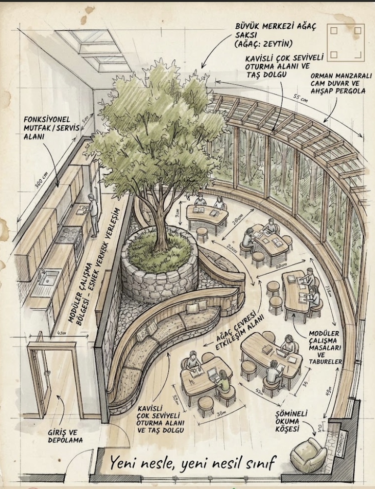
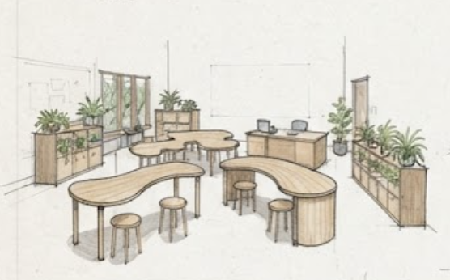
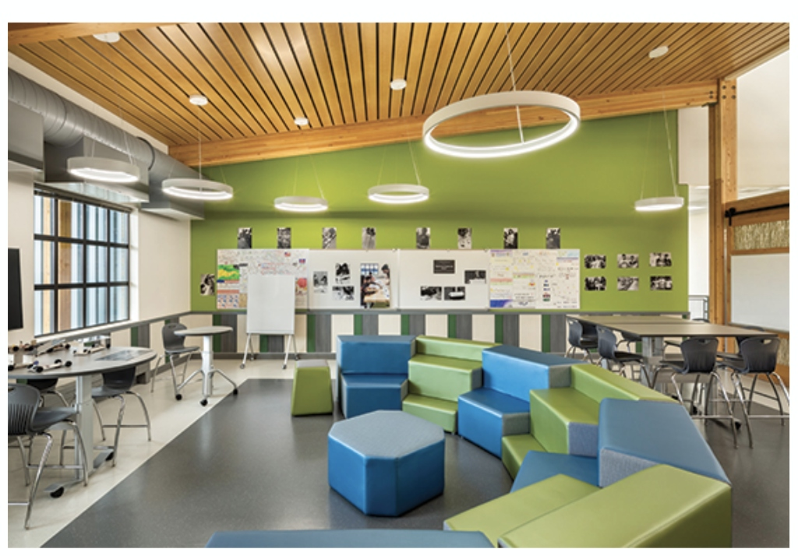
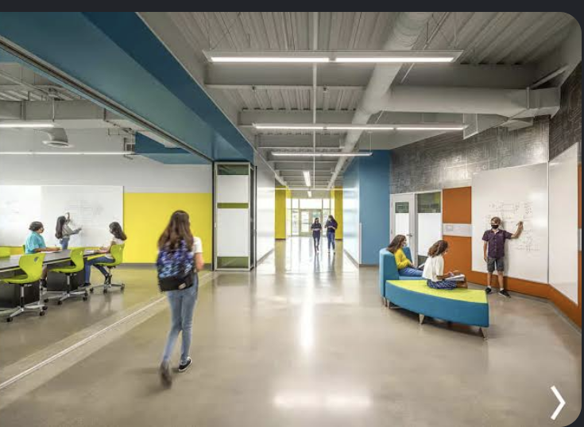
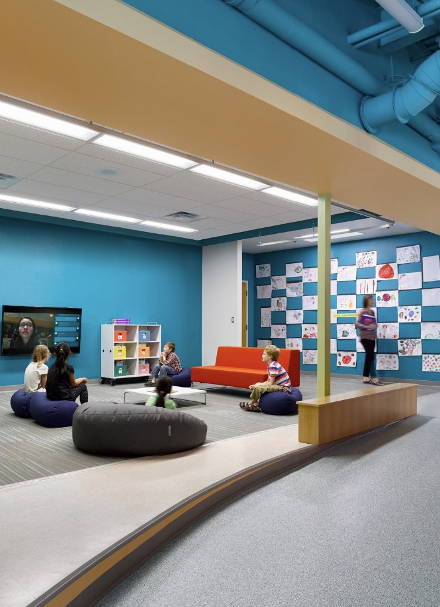

Yeni Nesle
Yeni Nesil Sınıf
"Yeni nesle, yeni nesil sınıf..."
Karanlık ve basık beton sınıflar yerine; ferah çalışma alanları, orman manzaralı tavan-taban cam cepheler, çatıdan süzülen doğal gün ışığı ve doğal masif ahşap dalga masalarla çocukların doğayla iç içe, özgürce ürettiği yaşam alanları kuruyoruz.

Ferah Alanlarda, Doğayla İç İçe Büyüyen Bir Nesil
Çocukların zihinsel berraklığı mekanın ferahlığıyla doğrudan bağlantılıdır. "Yeni Nesle Yeni Sınıf"; sıkışık sıra düzenini geride bırakıp, bol oksijenli, ferah ve huzurlu bir öğrenme atmosferi kurar.
1. Ferah Çalışma & Hareket Özgürlüğü
Sıkışık sıralar yerine öğrencilerin rahatça hareket edebileceği geniş sirkülasyon alanları ve nefes aldıran açık plan yerleşimi.
2. Doğal Masif Ahşap & Akustik Taş
Plastik ve sentetik malzemeler yerine doğal meşe, çam ve taş dolgular. Dokunulduğunda sakinleştiren, yankıyı yutan huzurlu dokular.
3. Orman Manzaralı Cam Cephe & Işıklıklar
Doğrudan ormana açılan boydan boya camlar ve tavandaki çatı pencereleri sayesinde tüm sınıf doğal gün ışığıyla yıkanır.
4. Şömine & Mutfak ile Sıcak Yuva
Soğuk kurum hissinden uzak; sıcak bitki çayı demlenen bir mini servis mutfağı ve şömineli sakin bir kitap okuma köşesi.
Mimarın Kaleminden: Sınıfın Bölge Bölge Anatomisi
Çizimdeki her ayrıntı öğrencilerin ferahlığı, odaklanması ve doğayla teması düşünülerek konumlandırılmıştır.
Merkezi Ağaç & Doğal Taş Saksı Alanı
"Ferah bir çalışma alanının yaşayan kalbi"
Mimari & Pedagojik Amaç:
Sınıfın kalbinde yer alan doğal taş saksı içerisindeki canlı ağaç, mekana taze oksijen ve sakinleştirici bir doğal dokunuş kazandırır. Öğrenciler ders aralarında ve grup çalışmalarında bu yeşil adanın çevresinde toplanır.
"Yeşilin ve doğal ahşabın olduğu ferah bir alanda öğrencinin dikkati dağılmaz, zihni sakinleşir ve üretkenliği artar."
Eski Klasik Sınıf vs. Yeni Nesil Ferah Sınıf
Sloganımız: "Yeni nesle, yeni nesil sınıf!" Dünün basık ve karanlık sıralarıyla bugünün açık fikirli çocuklarını sınırlamıyoruz.
Geleneksel Eski Sınıf
Basık, hareketsiz ve doğadan kopuk
Çocuklar arkadakinin ensesine bakar; hareket etmek ve rahatça yer değiştirmek imkansızdır.
Plastik zemin, yapay kaplamalar ve beton duvarlar. Doğal hiçbir malzeme yer almaz.
Güneş ışığını kesen eski perdeler ve sürekli baş ağrısı yaratan mekanik aydınlatma.
Öğretmen tek taraflı konuşur; öğrenciler pasif olarak oturmak ve not almak zorundadır.
Zil çalsa da dışarı çıksam denilen, enerjiyi ve motivasyonu tüketen durağan ortam.
Yeni Nesil Ferah Sınıf
Ferah çalışma alanı, doğayla iç içe ve özgür
Sıkışıklığı ortadan kaldıran geniş sirkülasyon hatları ve rahat hareket kabiliyeti.
Doğal ahşaptan kıvrımlı dalga masalar ve amfi hissi veren basamaklı doğal oturma alanları.
Panoramik cam cephe ve çatı ışıklıklarıyla sınıfa kesintisiz dolan doğal gün ışığı.
Öğrencilerin bitki çayı demleyebileceği servis alanı ve kitap okuma koltuğu.
Stresin sıfırlandığı, takım çalışmasının kendiliğinden geliştiği ilham verici bir atmosfer.
Ferah ve Doğal Sınıfın Kazandırdığı 6 Süper Güç
Ferah çalışma alanları ve biyofilik tasarımın öğrenci başarısı üzerindeki etkileri.
Doğal Stres Emilimi & Huzur
Doğal ahşap dokuları ve yeşil manzarayı gören öğrencilerin nabzı dengelenir, sınav kaygısı ve ders stresi hissedilir şekilde azalır.
Yüksek Odaklanma & Dikkat
Ferah bir alanda kıvrımlı dalga masalarda çalışan öğrencilerin dikkat süresi geleneksel sıralara göre ikiye katlanır.
Akran Öğrenmesi & İletişim
Kavisli amfi oturma basamakları ve dalga masalar sayesinde öğrenciler doğrudan göz teması kurar, fikirlerini rahatça paylaşır.
Doğal Gün Işığı & Göz Sağlığı
Tavandan tabana camlar ve tavan ışıklıkları, göz kaslarının uzağa ve yakına doğal odaklanmasını sağlayarak miyobu engeller.
Okul Sevgisi & Devamsızlık Bitişi
İçinde mutfağı, çıtırdayan şöminesi ve rahat koltuğu olan ferah bir sınıfta çocuklar okula koşarak gelir.
60 Saniyede Düzen Değişimi
Hafif ahşap tabureler ve kıvrımlı dalga masalar anında birleşerek büyük bir münazara halkasına dönüşebilir.
Ferah Çalışma Alanları ve Biyofilik Sınıf Tasarımları
Mimari plan eskizinden açık atölyelere ve ferah iç mekanlara kadar 6 özgün öğrenme alanı.
Ferah Sınıf Yerleşim Planı
Merkezi yeşil alan, kavisli oturma amfisi, mutfak ve şömineli okuma köşesini gösteren mimari plan.
Orman Manzarası & Ahşap Kirişli Tavan
Masif ahşap kirişler, tavan skylight pencereleri, kütüphane duvarı ve ferah iç mekan perspektifi.

MOBİLYA DETAYIOrganik Dalga Masalar & Bitki Rafları
Çocukların rahat oturmasına uygun dalga masalar ve mekanı taze oksijenle bölen canlı saksı üniteleri.

MODÜLER DÜZENModüler Altıgen Ada & Kademeli Oturma
Kademeli puf basamakları, ahşap akustik tavan ve ferah grup çalışma istasyonları.

AÇIK ATÖLYEŞeffaf Koridor & Yazılabilir Duvarlar
Kapalı kapıları ortadan kaldıran şeffaf bölmeler ve koridoru projeye açan yazılabilir yüzeyler.

MOLA KÖŞESİİnteraktif Ekran & Dinlenme Köşesi
Öğrenci çalışmalarının sergilendiği panolar, sunum ekranı ve rahat minderli mola alanı.
Ferah Sınıf Düzeni Simülatörü
Aşağıdaki butonlara tıklayarak sınıfın saniyeler içinde farklı ders ihtiyaçlarına nasıl dönüştüğünü görün.
Sınıfınız Yeni Nesle Ne Kadar Hazır?
5 hızlı soruyla sınıfınızın ferahlık, doğallık ve esneklik seviyesini ölçün.